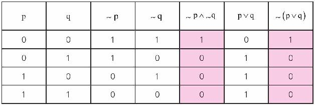

我们经常这样说：否定之否定即是肯定。
其实，这句话代表了一个逻辑等价式：～A与A等价。
下面这个例子想说明的是～(p∨v)与～p∧～q逻辑等价：
一天下午，两兄弟大毛和二毛放学了，兄弟俩在外面玩得很尽兴，到家后两兄弟拉开冰箱吃起冰淇淋来，当然这时他们都没有洗手。
这时，妈妈打电话回来了，大毛告诉妈妈，他们现在正在吃冰淇淋，吃完就去做作业。妈妈问他：“你们洗手了吗？”他的回答是：“是的，我们都洗手了。”
一小时后，妈妈回家了，看到兄弟俩灰头土脸的样子，明白了其实大毛和二毛都没有洗手。于是，妈妈说：“看来大毛或二毛洗过手的情况不属实啊！”
我们可以采用符号的形式来表述上面的事情：
p：大毛洗手了；
q：二毛洗手了；
～p：大毛没洗手；
～q：二毛没洗手；
～p∧～q：大毛没洗手，并且二毛也没有洗手；
～(p∨v)：大毛或二毛洗过手的情况不属实。
要想证明两个命题公式是逻辑等价的，只需要证明在真值表中，这两个命题公式对应的“列”完全相同就可以了。
可以看到在对应p和q所有可能取值的情况下，～(p∨v)和～p∧～q这两个逻辑式对应的“列”是相同的，因此～（p∨q）与～p∧～q逻辑等价，记为。～（p∨q）⇔～p∧～q。
所以“大毛、二毛都没有洗手”和“大毛或二毛洗过手的情况不属实”——这两种说法的逻辑含义是一致的。
～（p∨q）⇔～p∧～q逻辑运算真值表

～（p∨q）¬∨⇔～p∧～q这一等价关系，是用19世纪中叶英国数学家德·摩根（Augustus de Morgan）的名字命名的，称为德·摩根律，我们在前面的章节中也有介绍，小文，你还记得吗？
德·摩根是一位数学家，写了很多数学专著，同时他也是一位作家，还写过牛顿和哈雷的传记。